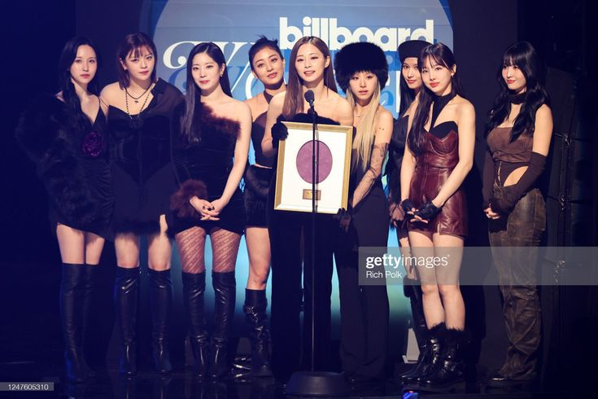

TWICE é um grupo feminino sul-coreano formado pela JYP Entertainment por meio do reality show Sixteen, estreando oficialmente em outubro de 2015. Composto por nove integrantes — Nayeon, Jeongyeon, Momo, Sana, Jihyo, Mina, Dahyun, Chaeyoung e Tzuyu — o grupo rapidamente se destacou no cenário do K-pop com seu conceito vibrante e músicas cativantes.
Desde o lançamento de seu primeiro sucesso, “Like OOH-AHH”, TWICE acumulou inúmeros hits como “Cheer Up”, “TT”, “Fancy” e “Feel Special”. Além de serem conhecidas por suas coreografias marcantes e visuais coloridos, as integrantes também demonstram versatilidade ao explorar diferentes estilos musicais em cada novo álbum.
Reconhecido mundialmente, o grupo é um dos principais nomes do K-pop da terceira geração, conquistando prêmios importantes, turnês internacionais e uma base de fãs global chamada ONCE. Ao longo dos anos, TWICE evoluiu musicalmente e visualmente, mantendo sua essência energética e conquistando novos públicos a cada era.
